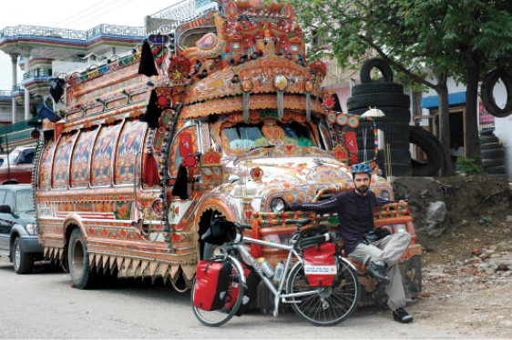

PAKİSTAN, 23 Temmuz
Fatihler’de kalıyoruz. Neler oldu bir toparlamalıyım. Öncelikle Quetta’ya indiğimiz geceyi ömür boyu hatırlayacağım. Yaklaşık 16 saat süren
çöl geçişi tam bir felaketti. Otobüsün en arkasına düşmemiz bir yana, buradaki otobüslerde amortisör yok. Aynı kamyonlarda olduğu gibi makas sistemi üzerine inşa edilmişler. Yolcular yeteri kadar ağırlık oluşturmadığı için her çukurdan sonra zıplıyoruz, bazen kafamız tavana değiyor. Pakistan’ın ünlü süslenmiş otobüslerinde konfor dışında her ayrıntı düşünülmüş.
Yolun büyük bölümünü gece geçtik. Garip bir yerde mola verdik. Çölün ortasında üç tane kerpiç ev. Tuvalet dedik, çölü gösterdiler. Sadece hanımlar için kapalı bir tuvalet vardı. Yolun büyük bölümü taş toprak. Taliban ya da başka illegal gruplar tarafından durdurulma korkusu içimizde. Böyle bir durumda ilk hedef biz turistler olacağız. Can değilse bile mallar gidecektir, burası kesin. Türkiye’den geldiğimiz ve Müslüman olduğumuz için az ziyanla sıyırabileceğimizi sanıyorum.
Yolculuk konvoy şeklinde yapılıyor. Önde arkada askeri araç var mıydı tam emin değilim. Ama yol boyu defalarca askeri güvenlik noktalarında durdurulduk. Birinde bizi aşağıya indirip arayacak bile oldular. Otobüsün ortasında bir sürü insan, özellikle de çocuklar yerlerde yatıyor. Otobüsün arkasında kapı yok. Sadece önünde kapı var. En arkadan en öne gitmek, Çin Seddi’ni yürümekten zor. İnsanların ne tepki vereceğini de tahmin edemiyoruz. Hepsi sürekli arkasını dönüp bize bakıyor. İnci saçlarını zaten hep kapalı tutuyor. Ama yanımızda Çek Cumhuriyeti’nden bir çift var. Kız sadece bir şapka takmış ve sarı saçları kenarlarından sarkıyor. Neyse İnci uyardı da topuz yapıp kaldırdı büyük bölümünü. Pasaportları istiyor şoför, her seferinde “askerler soracak” diyor ama ben güvenmediğimden vermiyorum. Alınıyor buna adam.
Kaçırılma vesaire senaryolarını kafamızdan atmak için Çek arkadaşlarımızın (hemen arkadaş olduk, çünkü burada tek yabancı biziz) elindeki Pakistan kitabına yoğunlaşıyoruz. Dışarıda gerçek bir çöl var. Dünyanın en büyük çöllerinden olan Taftan’ı geçiyoruz. Burası Afgan sınırına çok yakın. Burada devletin tam bir kontrolü olmadığını biliyoruz.
Tüm gece yerimizde zıplayıp durarak geçti yolculuk. Kafamı defalarca tavana vurdum. Koltuktan defalarca havalandı bedenim. Bir yerden sonra sinirlerim bozuldu, her zıpladığımda gülmeye başladım. Otobüsün önü çukura girince hazırlanmaya başladık “Hah şimdi zıplayacağız” diye. Gece karşıdan gelen araçların ışıkları sadece iyice yaklaştıklarında seçiliyor. Korkunç bir toz fırtınası. Otobüslerin çıkardığı toz yanında çöl rüzgârı da ortalığı kasıp kavuruyor. Otobüsün içi, ağzımız burnumuz tozla doldu.

Pakistan, Dina
Dünyanın en eğlenceli ulaşım aracı, dünyanın en renkli otobüsünün önünde.
Quetta’ya sabaha karşı beşte iniyoruz. Evinde kalacağımız Fatih hocamı arıyorum. Ancak bir türlü ulaşamıyorum. Telefon şirketine tekrar tekrar küfür ederek, Fatih’le tanışmamızı sağlayan arkadaşım Salih’i arıyorum. Ben Salih’i Türkiye’de sanırken meğer o umre için Arabistan’a gitmiş. Burada sabah beşse orada daha erken olmalı. Ben Arabistan’daki Salih’le, Salih de Arabistan’dan Pakistan’daki Fatih’le konuşuyor. Küresel bir iletişim ağı kuruyoruz böylece. Fatih gelene kadar bomboş sokakta bekliyoruz. Bisikletler ve çantalar iniyor otobüsün tavanından. Bir kenara yığıyoruz. Ben fotoğraf makinesi, video kamera, gps ve benzeri elektronik aletlerle pasaportları alıyorum yanıma. Rahat davranmaya çalışıyoruz ama adını duymadığım bu şehirde sabahın köründe bu biraz zor oluyor. Çek çift de yanımızda. Onlar da aval aval bakıyorlar. Sanırım içgüdüsel olarak bir arada duruyoruz. Otobüste tanıştığımız ve molada biraz sohbet ettiğimiz İngilizce bilen Ali isimli Pakistanlı arkadaş da bizimle bekliyor. O da bunu içgüdüsel olarak yapıyor. Başımıza üşüşen taşıyıcıları, dilencileri uzaklaştırıyor kendi dilinde söylediği sert kelimelerle. “Arkadaşım olduğunuzu söyledim, korkmayın” diyor. Yok canım neden korkalım ki?
Aslında burası bir otogar falan değil. Otobüs alelade bir caddede durmuş. Ama satıcılar, taşıyıcılar, belki de kötü niyetli kişilerin hepsi de burada beklediğine göre araçlar her zaman burada duruyor olmalı. Otobüs gidiyor, hava yeni yeni aydınlanmaya başlıyor. Son took took ile Ali de gidiyor. Bize numarasını bırakıyor. Gitmeden önce Fatih’i arayarak yolda ve yakında olduğunu teyit ediyor. O kendi telefonundan buradaki hatları arayabiliyor.
O da gidince dört yabancıyız... Toz, toprak, pislik içindeki kaldırımda öylece kalıyoruz. Gece bitiyor, güneş doğuyor dağların arkasında. Çok arabesk olacak ama Fatih de güneş gibi doğuyor ufuktan. Sonunda geldi. Kurtarıcı gibi. Beklediğimiz süre çok olmamasına rağmen, sanki Arabistan’dan gelmiş kadar uzun geliyor bize.